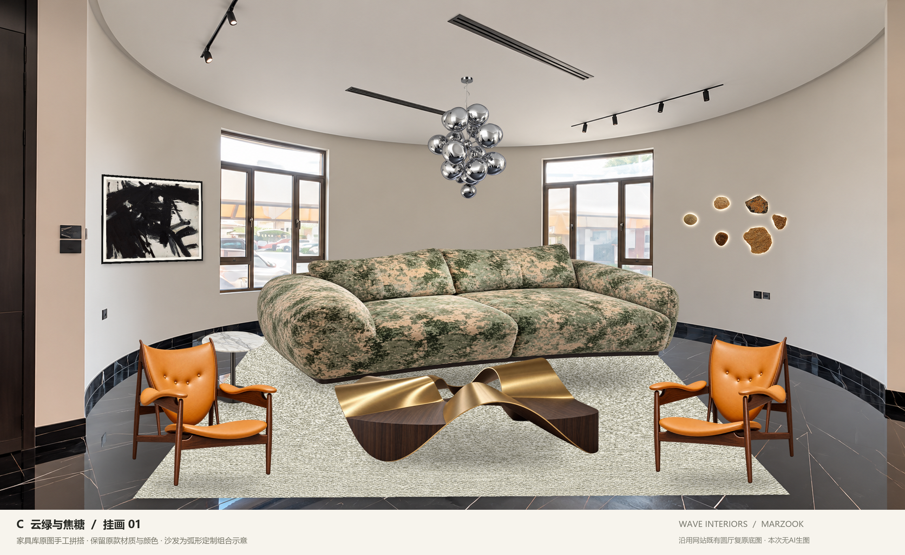
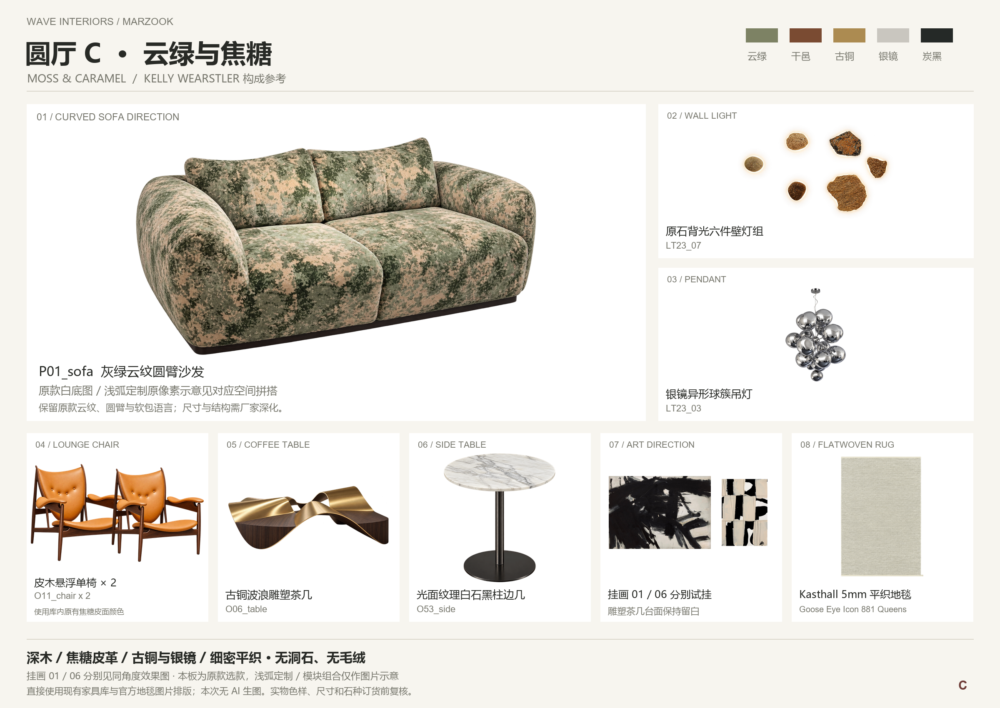

01 / Franz Kline · Siskind, 1958
完整原作构图，横幅，拟选图像约 1016 × 721 mm，加细哑黑框与暖白卡纸。
DIA 官方产品页 ↗C / D — FROM YOUR FURNITURE COLLECTION
沙发、单椅、茶几、边几与灯具，直接使用家具库白底图，保留原款造型、材质与颜色。
本轮手工像素拼搭 · 未新增 AI 生图 · 无洞石 / 无毛绒 · 先审效果，再确认 VR

FOUR VIEWS
ORIGINAL PRODUCTS
点击产品可看库内白底图，另附原始参考与已有来源链接。

ART & MATERIAL
完整原作构图，横幅，拟选图像约 1016 × 721 mm，加细哑黑框与暖白卡纸。
DIA 官方产品页 ↗完整原作构图，拟选 70 × 100 cm 竖幅，搭配细哑黑框。
The Poster Club 产品页 ↗5 mm 平织地毯，使用官方现有图片做地面透视拼搭，无长毛绒。
Kasthall 官方产品页 ↗本轮家具全部来自现有库内图片，以手工抠图、缩放、镜像、透视和阴影排版；没有新增 AI 重绘，也没有用简化几何替换家具外观。库内部分素材本身含此前整理或补全，沿用原资料标记。背景沿用网站既有圆厅复原空景，含推定接续，不是未经处理的现场实拍。C 沙发为原款浅弧定制图示；D 为双座织面模块与橄榄皮座的浅弧组合，右端含镜像，需厂家确认对应扶手、连接和尺寸。效果用于选款与材质搭配，不作生产或精准尺度依据。现有 VR 保留，本轮效果确认后再调整。
完整素材来源与处理记录 ↗